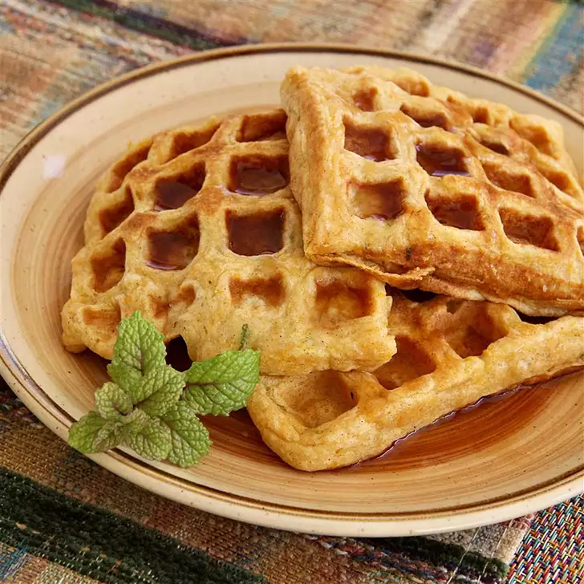

Sweet Potato Waffles

Delicous Sweet Potato Waffles for Everyone!
This sweet potato waffles recipe takes about 25 mintues prep. to table.
It makes 8 pumpkin waffles and has the great taste of cinnamon,
brown sugar, and sweet potato!
Ingredients
- 1 sweet potato
- 1 cup flour
- 2 teaspoons baking powder
- 1/2 teaspoon ground cinnamon
- 1/4 teaspoon salt
- 1 1/4 cups milk
- 2 eggs
- 3 tablespoons melted butter
- 1 tablespoon brown sugar
- 1 teaspoon lime juice
- 1/2 teaspoon vanilla extract
- 1/2 teaspoon grated lime zest
Steps
- Preheat waffle iron according to
manufacturer's directions;
spray lightly with vegetable cooking spray.
- Combine flour, baking powder, soda, salt,
cinnamon, ginger, and nutmeg in a large
bowl. Set aside.
- Combine oil, molasses, pumpkin and buttermilk
in a small bowl; set aside.
- Whisk together egg and SPLENDA Granulated
Sweetener until blended. Add buttermilk mixture,
whisking until blended. Add to dry ingredients,
stirring just until moistened.
- Pour batter into a hot waffle iron and bake approximately
5 minutes. Serve with maple syrup.